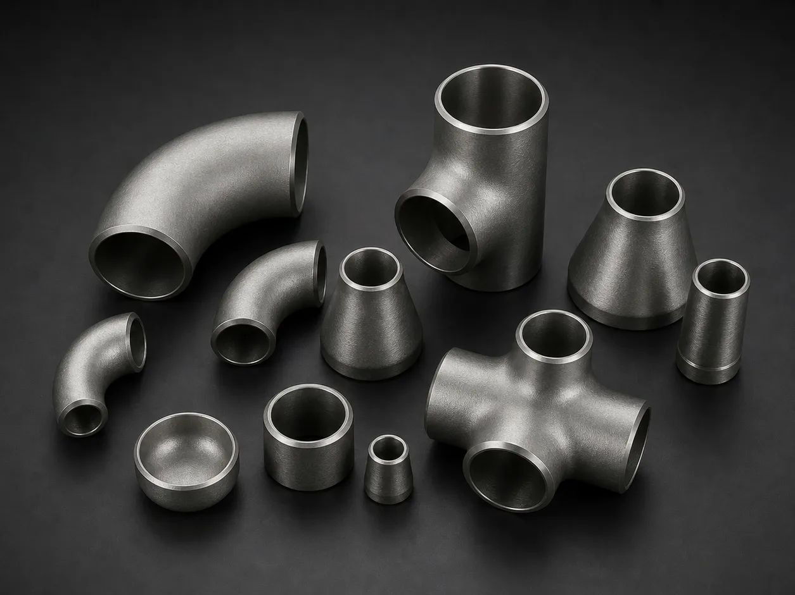

Gururaj Infradesigns is a trusted Alloy Steel WP5 Pipe Fittings Manufacturer in India offering ASTM A234 WP5 / ASME SA234 fittings in seamless, welded, ERW, and fabricated forms for refineries, power plants, petrochemical industries, and high-temperature piping applications.
Alloy Steel WP5 Pipe Fittings are chromium-molybdenum alloy fittings designed for elevated temperature and moderate pressure applications where strength, oxidation resistance, and long-term reliability are critical. These fittings are widely used in refineries, petrochemical plants, power generation facilities, and process industries handling high-temperature fluids and steam. Gururaj Infradesigns is a trusted ASTM A234 WP5 Pipe Fittings Manufacturer in India, supplying premium-quality fittings manufactured to international standards.
Our product range includes elbows, tees, reducers, pipe caps, stub ends, and crosses available in seamless, welded, ERW, and fabricated construction. Manufactured from ASTM A234 WP5 alloy steel, these fittings provide dependable performance in demanding industrial environments where resistance to heat and mechanical stress is essential.

ASTM A234 WP5 is a chromium-molybdenum alloy steel grade containing approximately 5% chromium and 0.5% molybdenum. The addition of chromium enhances oxidation and corrosion resistance, while molybdenum improves high-temperature strength and creep resistance. These properties make WP5 Pipe Fittings suitable for applications involving elevated temperatures and pressure conditions.
As part of our comprehensive range of Alloy Steel Pipe Fittings, ASTM A234 WP5 fittings are commonly used in boiler systems, steam pipelines, power plants, and refinery operations where durability and long service life are essential.
| Parameter | Details |
|---|---|
| Product | Alloy Steel WP5 Pipe Fittings |
| Grade | ASTM A234 WP5 |
| Specifications | ASTM A234 / ASME SA234 |
| Dimensions | ASME/ANSI B16.9, ASME B16.28, MSS-SP-43, BS4504, BS1560, BS10 |
| Product Types | Elbow, Tee, Reducer, Pipe Cap, Stub End, Cross |
| Seamless Size | 1/2" – 10" |
| Welded Size | 1/2" – 48" |
| General Size Range | 1/8" NB to 48" NB |
| Fittings Size | DN15 – DN1200 |
| Type | Seamless / ERW / Welded / Fabricated |
| Thickness | SCH 5S, 10S, SCH10, SCH20, SCH30, STD, SCH40, SCH60, XS, SCH80, SCH100, SCH120, SCH140, SCH160, XXS |
| NACE Compliance | Available with NACE MR 01-75 |
| Bending Radius | R=1D, 2D, 3D, 5D, 6D, 8D, 10D or Custom |
| Certification | EN 10204 3.1 / MTC Available |
| Grade | ASTM / ASME | UNS Number | Chromium Content | Molybdenum Content |
|---|---|---|---|---|
| WP5 | ASTM A234 / ASME SA234 | K41545 | 4.00 – 6.00% | 0.45 – 0.65% |
Equivalent grade references help engineers and procurement teams identify the same material across project specifications and international standards, ensuring proper material selection and compatibility.
Alloy Steel WP5 Pipe Fittings retain their mechanical strength and structural stability even under elevated temperatures. This makes them a dependable choice for steam lines, heat exchangers, and high-temperature process piping systems operating continuously under demanding conditions.
The chromium content in ASTM A234 WP5 provides excellent resistance to oxidation and scaling at higher temperatures. This helps extend service life and reduces the risk of material degradation in refinery and thermal processing applications.
The addition of molybdenum improves the alloy's ability to withstand prolonged exposure to stress and heat without deformation. As a result, WP5 fittings deliver reliable long-term performance in critical industrial environments.
ASTM A234 WP5 Pipe Fittings are designed to perform efficiently in moderate to high-pressure systems. Their combination of strength and toughness makes them suitable for power plants, petrochemical units, and industrial process pipelines.
With excellent heat resistance, durability, and mechanical reliability, WP5 fittings require less frequent replacement and maintenance. This contributes to lower lifecycle costs and improved operational efficiency for end users.
| C (%) | Mn (%) | P (%) | S (%) | Si (%) | Mo (%) |
|---|---|---|---|---|---|
| 0.28 Max | 0.30 – 0.90 | 0.045 Max | 0.045 Max | 0.10 – 0.50 | 0.44 – 0.65 Max |
| Property | Value |
|---|---|
| Tensile Strength | 415 MPa Min |
| Yield Strength | 220 MPa Min |
| Elongation | 20% Min |
| Hardness | 121 – 174 HB |
Alloy Steel WP5 Pipe Fittings are extensively used in boilers, superheaters, steam headers, and high-temperature steam distribution systems. Their ability to withstand heat and pressure makes them ideal for critical power plant operations.
These fittings are commonly installed in petrochemical processing units handling hot hydrocarbons and process fluids. Their oxidation resistance and mechanical strength help ensure safe and efficient plant performance.
Refineries utilize ASTM A234 WP5 Pipe Fittings in process piping, catalytic units, and heat transfer systems exposed to elevated temperatures. Their durability helps minimize maintenance and improve operational reliability.
WP5 fittings are suitable for industrial furnaces, thermal fluid pipelines, and heating equipment where resistance to thermal stress and prolonged service conditions is required for uninterrupted operation.
Various chemical and manufacturing industries rely on Alloy Steel WP5 Pipe Fittings for piping systems operating under demanding temperature and pressure conditions, ensuring dependable long-term performance and service life.
| Property | ASTM A234 WP5 | ASTM A234 WP9 |
|---|---|---|
| Chromium Content | 4.00–6.00% | 8.00–10.00% |
| Molybdenum Content | 0.45–0.65% | 0.90–1.10% |
| High-Temperature Resistance | Excellent | Superior |
| Oxidation Resistance | Excellent | Superior |
| Pressure Handling Capability | High | High |
| Typical Applications | Refineries, Steam Lines, Petrochemical Plants | Severe Heat Service, Furnace Systems |
| Relative Cost | Moderate | Higher |
ASTM A234 WP5 Pipe Fittings are widely used in refinery, petrochemical, and steam applications where a balance of performance and cost is important. In comparison, ASTM A234 WP9 Pipe Fittings contain higher chromium and molybdenum content, offering improved oxidation resistance and suitability for more demanding high-temperature environments. The choice between the two ultimately depends on the operating conditions and temperature requirements of the application.
| Finish | Benefits |
|---|---|
| Black Finish | Standard industrial finish suitable for most applications |
| Shot Blasted | Improves surface cleanliness and appearance |
| Pickled | Removes surface contaminants |
| Painted | Provides temporary protection during storage and transit |
Proper surface preparation helps maintain product integrity and supports installation readiness.
Gururaj Infradesigns supplies Alloy Steel WP5 Pipe Fittings in multiple sizes, schedules, and configurations to support refinery, power generation, petrochemical, and industrial projects. Our products are supplied to EPC contractors, fabricators, engineering consultants, and industrial buyers across India.
With a focus on quality, timely delivery, and technical support, we help customers source dependable alloy steel piping components that align with project specifications and operational demands.
Quality remains an integral part of our manufacturing and supply process. Every fitting undergoes inspection for dimensional accuracy, material conformity, and workmanship before dispatch.
As an ISO Certified Company, we are committed to supplying reliable piping solutions that consistently meet industrial quality standards and customer expectations.
Selecting the right alloy steel grade depends on operating temperatures, pressure ratings, and process conditions. Choosing the correct fitting material helps improve plant efficiency, operational safety, and equipment longevity. Our team can assist in selecting the most suitable WP5 fitting type, size, and specification based on your project requirements. We work closely with engineers, consultants, EPC contractors, and industrial buyers to provide practical guidance and dependable piping solutions for critical industrial applications.